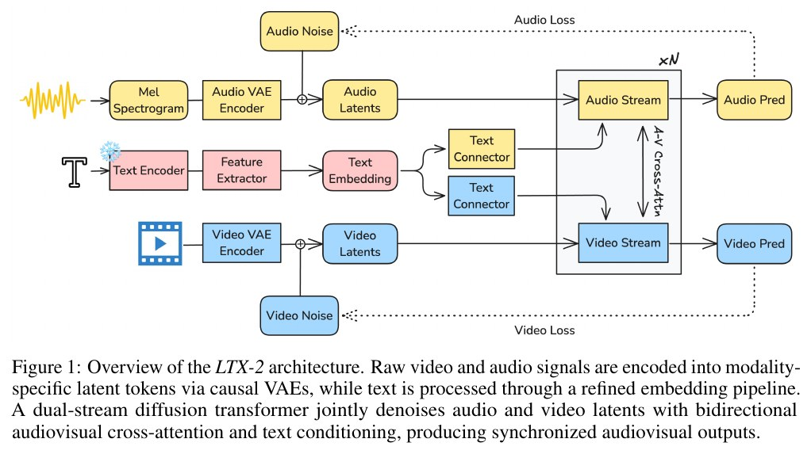
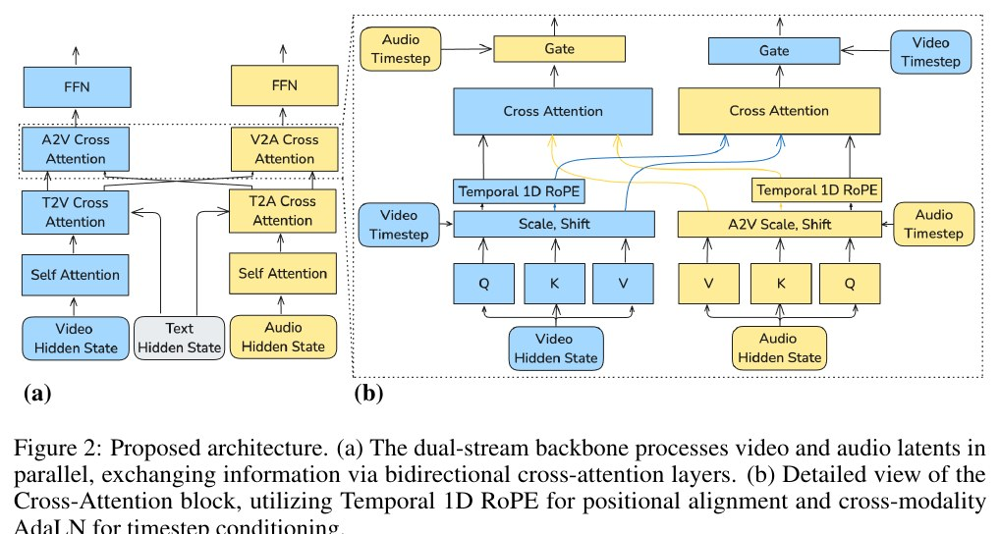
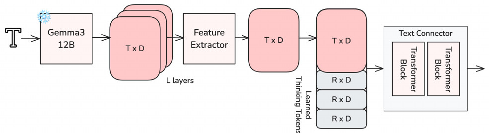
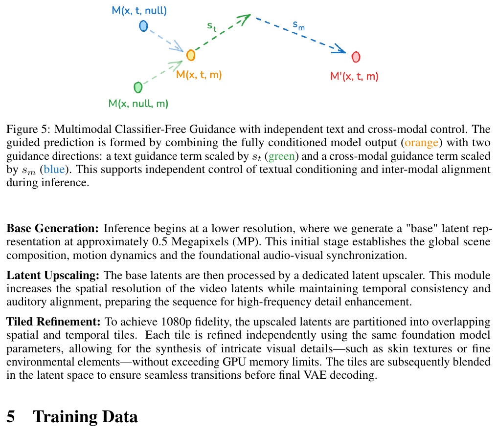

速览
卡片里的数字都来自原文；论文没写的标 原文未披露。
音频 st=7, sm=3所有报告结果都用这组§4.1
版本说明：本页依据 arXiv v1（2026-01-06）。结论 §9 写的是「13B 视频 DiT + 3B 音频流」，和摘要/§3.1/表 1 的 14B + 5B（共 19B）对不上，详见 局限。本页统一用 14B + 5B。
五条要点
非对称双流：视频分到大部分参数
视频流 14B、音频流 5B，共享深度，每层四步：自注意力 → 文本交叉注意力 → 音视频交叉注意力 → FFN§3.1。思路是视频的信息密度更高，所以拿更多参数；不像 Ovi 那样复制两个同尺寸骨干§2.1 · §6.3。
跨模态注意力只用时间 RoPE
视频用 3D RoPE（x, y, t），音频用 1D RoPE；音视频互相注意时 Q/K 只加时间分量，强制它学「何时对齐」而不是「哪里对齐」§3.1.1。跨模态 AdaLN 门控用的是对方模态的 timestep§3.1.2。
文本侧下了很重的功夫
冻结的 Gemma3-12B，取全部层特征，经 mean-centered scaling 后拼接，再用投影矩阵 W 投影；之后接双向 Text Connector，并用可学习的 thinking tokens 替换 padding 位置；视频流和音频流各自有一个 connector§3.2。作者认为这对语音的发音准确性很关键§1。
modality-CFG：文本和跨模态分开加权
在标准 CFG 上再加一项 sm·(M(x,t,m) − M(x,t,∅))，sm 调大时音画同步更好§4.1。报告结果用视频 3/3、音频 7/3§4.1。
效果结论大多没给数字
音画联合的人评只有定性描述：明显优于 Ovi，与 Veo 3 和 Sora 2 相当，没给胜率和样本数§6.1。全文唯一的数字表是每步耗时表 1；数据规模、配比和训练超参都 原文未披露。
架构：两个 causal VAE、一条文本管线、一个非对称双流 DiT
三大组件：(i) 两个模态各自的 VAE；(ii) 精修过的文本嵌入管线；(iii) 双流 DiT 联合去噪§3。

相对前代 LTX-Video 改了什么
作者说 LTX-2 沿用 LTX-Video 的设计原则和时空 latent 空间，新加的是高保真音频、多语言支持和精修后的文本理解管线§1。按组件拆开看：
视频 latent 沿用
时空 causal VAE 编码，线性投影到 Transformer 宽度后进入 DiT 堆叠§3。VAE 的压缩率、通道数本文没写，需看 LTX-Video 原文 原文未披露。
音频 VAE 新增
输入 16 kHz 立体声，两个声道各算一个 mel 谱后在通道维拼接，送进 causal 音频 VAE。输出 1D latent 序列，每个 token 约 1/25 秒、128 维§3.3。mel 参数化沿用 AudioLDM 系做法，扩展成原生立体声§3.3。
Vocoder 新增
基于 HiFi-GAN，输入两声道 16 kHz mel，联合合成 24 kHz 双声道波形，相当于顺带做了上采样；生成器通道数是 HiFi-GAN V1 的 2 倍§3.3.1。
双流 DiT 新增
视频流 14B，音频流 5B§3.1。每个 block 依次做：自注意力 → 文本交叉注意力 → AV 交叉注意力 → FFN，主操作之间插 RMSNorm§3.1。附录图 A2 说两条流的结构相同图 A2，差别在宽度/参数量。具体层数和宽度 原文未披露。
位置编码 新增
视频用 3D RoPE（x, y, t），音频用 1D RoPE；AV 交叉注意力里 Q/K 只加时间分量§3.1.1。
跨模态 AdaLN 新增
在 AV 交叉注意力里，先用本流的 timestep 分别调制 Q 和 (K, V)；注意力的输出再过一个门，门的参数取决于对方模态的 timestep§3.1.2。作者说这样两路的 timestep 或时间分辨率不同时也能对齐§3.1。

示意：根据 §3.1–§3.1.2 的文字和图 2 重画，只画原文写明的顺序和条件关系；方框大小不代表真实参数比例。
文本管线：多层特征 + thinking tokens
作者的判断是：只用 decoder-only LLM 最后一层不够好，而且 Gemma3 是因果注意力，缺少双向上下文§3.2。于是做了两层补偿。

Multi-Layer Feature Extractor §3.2.1
- 输入形状 [B, T, D, L]，L 是层数（取全部 decoder 层）
- ① 对每层在序列维和嵌入维上做 mean-centered scaling
- ② 拉平成 [B, T, D×L]
- ③ 用可学习的稠密矩阵 W 投影回 D
- W 只在一个简短的初始阶段和 LTX-2 一起训练（diffusion MSE），之后冻结；LLM 全程冻结
Text Connector + Thinking Tokens §3.2.2
- 若干层全双向注意力的 Transformer block
- 可学习的 thinking tokens 拼到输入后面，占掉原来 padding 的位置
- 作用类似 ViT 的 register，充当全局信息载体
- 最后经 caption projection 投影成 DiT 的条件输入
- 视频流和音频流各有一个 connector，和 DiT 一起训练
- thinking token 数 R、connector 层数 原文未披露
推理侧：modality-CFG 与多尺度分块
每条流都看作一个模型 M(x, t, m)：x 是本模态 latent，t 是文本条件，m 是另一模态的特征§4.1。
全条件 M(x,t,m)
文本 + 对方模态都给
去文本 M(x,∅,m)
视频 st=3，音频 st=7§4.1
去对方模态 M(x,t,∅)
两路 sm 都是 3§4.1
按公式，每条流每步要算 3 次前向（全条件、去文本、去对方模态）推算；表 1 的测速是在 CFG=1 下做的，没有算进这部分开销。

多尺度、多分块推理到 1080p §4.2
- Base Generation：先在约 0.5 MP 生成 base latent，确定构图、运动和音画同步
- Latent Upscaling：用专门的 latent upscaler 提高视频 latent 的空间分辨率
- Tiled Refinement：切成有重叠的空间 + 时间 tile，用同一套基础模型参数逐块细化，在 latent 空间融合后再 VAE 解码
upscaler 的结构、训练方式，以及细化阶段的步数和噪声强度 原文未披露。
数据与 caption：披露得很少，但 caption 规范值得细看
原文的数据章节（§5 + §5.1）只有两段。下面把能找到的信息全部列出，没写的逐项标出来。
原有资产本文的筛选本文新做的标注
已披露的信息
| 维度 | 原文怎么说 | 来源 |
|---|---|---|
| 数据来源 | LTX-Video 数据集的子集；LTX-Video 数据本身的来源本文没讲 | §5 |
| 筛选标准 | 「contained significant and informative audio components」；作者称该子集在视觉与听觉内容上分布均衡 | §5 |
| 筛选方法 / 阈值 | 原文未披露（用什么模型或指标判断「音频有信息量」都没写） | — |
| 片段数 / 时长 / token 数 | 原文未披露 | — |
| 语音 / 音乐 / 音效配比 | 原文未披露 | — |
| 语种分布 | 原文未披露；局限章节承认训练数据中少见的语种/方言效果更差 | §7 |
| 分辨率 / 时长分桶 | 原文未披露 | — |
| 合成数据 | 原文未提及 | — |
| 去重 / 安全过滤 | 原文未提及；§8 只说模型会反映训练数据中的偏见 | §8 |
| Captioner 模型 | 只说是「新开发的视频 captioning 系统」；用了哪个模型、是否微调 原文未披露 | §5.1 |
| Caption 长度 / 格式 | 原文未披露（没有给 caption 样例） | — |
原文没有给任何比例，所以本页不画配比条形图。
Caption 规范：原文写明要覆盖的内容
目标是「comprehensive yet factual」：只描述看到和听到的，不做情绪解读，要捕捉每个有意义的动作、外观和声音§5.1。
听觉 新
- 完整声景：音乐、环境声
- 台词逐字精确转写
- 标注说话人、语种、口音
视觉
- 镜头运动
- 光照
- 主体行为
- 动作、外观
写法约束
- 只写客观事实，不做情绪解读
- 要详尽（exhaustive）
- 作为视频、音频和语言之间的统一文本接口
caption 和架构是互相配合的 本页解读
caption 要求逐字转写台词、标出说话人，对应的是文本侧的重投入：Gemma3-12B 全层特征加 thinking tokens，作者说这对「语音的发音和语义准确性」很关键§1 · §2.2；局限章节承认的「多说话人时台词分配给错角色」§7，恰好也是 caption 里说话人标注要解决的问题。两者之间的因果关系，论文没有做消融验证。
Figure 3 的 prompt 片段（论文唯一能看到的类 caption 文本）本地 figures/ 未裁此图
图 3 的注意力可视化里出现了几段标注，例如 <Car passing by>、"Listen to this" <Clapping>、S1: "I'm James" S2: "I'm Arnold" Both: "And we are in sync"、"Welcome… to LTX-2"图 3。看得出音效用尖括号、台词用引号，并区分 S1/S2/Both 这样的说话人。但这些只是图上的说明文字，不能直接当成训练 caption 的格式。
训练配方：只有骨架，没有超参
原文没有单独的训练章节。下面这些信息是从 §3.2.1、§3.2.2、§9 和附录图 A1 里拼出来的。
预训练视频 DiT
从已预训练的视频 DiT 扩展，不重复复制视觉骨干§9；架构沿用 LTX-Video§2.1
简短初始阶段
投影矩阵 W 和 LTX-2 一起训练，用 diffusion MSE；Gemma3 冻结；作者说整体质量有提升§3.2.1
音画联合训练
W 冻结；两个 Text Connector 和音视频 DiT block 一起训练§3.2.1–3.2.2；flow matching 速度场损失，音频和视频分别算损失图 A1 · 图 1
「progressive joint training」
结论里提到这个说法§9，但分几个阶段、分辨率和时长怎么递进，原文未披露
示意：阶段划分是本页根据零散描述整理的；S0 和 S1 之间的先后关系原文没有明说。
| 项目 | 原文信息 | 来源 |
|---|---|---|
| 目标函数 | flow matching，学习音频与视频 latent 的速度场；W 的初始阶段写作「standard diffusion MSE loss」 | 图 A1 · §3.2.1 |
| 冻结策略 | Gemma3-12B 全程冻结；W 训练完初始阶段后冻结 | §3.2.1 |
| 音频流初始化 | 原文未披露（是随机初始化还是有预训练的 T2A 模型） | — |
| 两路 timestep | 两路 timestep 可以不同，跨模态 AdaLN 就是为此设计的；训练时怎么采样 原文未披露 | §3.1 |
| 学习率 / batch / 步数 / 算力 | 原文未披露 | — |
| 条件 dropout（供 CFG 用） | 原文未披露（推理要用 M(x,t,∅)，训练时应当丢弃过对方模态，但原文没写） | — |
| 后训练 / SFT / RL / 蒸馏 | 原文未提及 | — |
| latent upscaler 训练 | 原文未披露 | §4.2 |
| 音频 VAE / vocoder 训练 | 只写了结构（立体声 mel、通道翻倍），训练数据和损失 原文未披露 | §3.3 |
评测：一张测速表、一份第三方榜单排名、一段定性人评
作者从三个维度评估：音画质量、纯视频基准、计算效率§6。只有效率给了具体数字。
效率：每步耗时（表 1）
| 模型 | 模态 | 参数 | Sec / Step ↓ |
|---|---|---|---|
| Wan 2.2-14B | Video Only | 14B | 22.30 s |
| LTX-2 | Audio + Video | 19B | 1.22 s |
设置：1 张 NVIDIA H100，121 帧，720p，单步 Euler solver，CFG=1§6.3。比较的是每个扩散步的耗时，不是端到端耗时；两者各自需要多少步，原文未披露。
两张图的横轴都从 0 开始。时长数字是作者对各家上限的说法§6.3，没有给出处或测量方式；LTX-2 自己也在局限里承认超过约 20 秒会出现漂移§7。
音画联合人评 无数字 §6.1
- 形式：人工偏好研究，用的是内部 benchmark
- 评估维度：视觉真实感、音频保真度、时间同步（口型、音效）
- 结论：「significantly outperforms」Ovi；与 Veo 3、Sora 2 「comparable」
- 样本数、评审人数、胜率、prompt 集 原文未披露
纯视频：Artificial Analysis 公开榜 §6.2
- 截至 2025-11-06：Image-to-Video 第 3，Text-to-Video 第 4
- 排在 Sora 2 Pro 和 Wan 2.2-14B 之前
- 第三方公开榜单，排名会随时间变；原文没给分数，也没列排在前面的是哪几家
其他定性的效率说法没有数字
- 分辨率越高、时长越长，和 Wan 2.2 的速度差距越大，作者归因于 latent 空间设计§6.3。没给数据。
- 比 Ovi 快（Ovi 是两个从 Wan 2.2-5B 微调来的 5B 流）§6.3。没给数据。
- 图 3 的注意力可视化：V2A 图取前 1/3 推理步，A2V 图取后 1/3；能看到注意力跟着移动的车走、在说话人之间切换、特写时聚焦嘴唇图 3。属于定性证据。
新在哪
只列可以对照原文核实的结构性做法。RMSNorm、RoPE、Rectified Flow 这类常规组件不算在内。
非对称双流，而不是复制两个同尺寸骨干
视频 14B / 音频 5B，深度共享、宽度不同§3.1。对比对象是 Ovi、BridgeDiT 这类「复制 T2V + T2A 骨干再拼起来」的做法§2.1。
可核对的收益只有表 1 的每步耗时；非对称和对称在质量上的对比没有做消融。
跨模态注意力只用时间 RoPE
音视频交叉注意力里 Q/K 只加时间分量，把对齐问题限制在时间轴上§3.1.1。
图 3 显示视频侧仍会在空间上聚焦到车、嘴唇等区域，说明空间定位是靠内容学出来的，而不是靠位置编码。
跨模态 AdaLN：由对方的 timestep 控制「收多少」
Q 和 (K, V) 由本流 timestep 调制，输出门由对方模态的 timestep 调制§3.1.2 · 图 2b。这让两路处在不同噪声水平时也能合理交换信息。
thinking tokens 替换 padding
Text Connector 里把 padding 位置换成可学习 token，作为全局信息载体，视频流和音频流各有一个 connector§3.2.2。效果只有一句定性描述：「显著提升语音发音准确性和复杂 prompt 遵循」§2.2。
modality-CFG
把对方模态当成一种可以丢弃的条件，单独加一个引导项 sm§4.1。作者观察到 sm 越大同步越好，但没有给出 sm 扫描曲线。
对图像编辑数据、评测和 caption 的启示
每条先写论文的做法（带来源），再写一条可以迁移到编辑任务的做法。「迁移建议」都是本页的推断，不是论文内容。
C1只写观察到的，不写解读
论文：caption 要「comprehensive yet factual」，只写看到和听到的，不做情绪解读§5.1。
迁移建议，不是论文内容：编辑 caption 和指令里，把「看得见的变化」（物体、属性、位置、光照）和「主观风格词」（氛围感、高级感）分到不同字段。训练时以前者为主，后者作为可选条件单独 dropout，避免模型把主观词和某种固定画面变化绑在一起。
C2文字内容要逐字写，并标出归属
论文：台词要精确转写，并标注说话人、语种和口音§5.1；局限里承认多说话人时会把台词分错人§7。
迁移建议，不是论文内容：对应到编辑任务是图中文字编辑：caption 里写出原文字和目标文字的逐字内容，并写明属于哪个载体（招牌、T 恤、屏幕）。多主体场景下的指令要能明确指到某个主体（左边的人、穿红衣的人），专门留一个多主体评测子集，检查编辑有没有落到错误的对象上。
C3caption 要覆盖每个需要控制的维度
论文：视觉部分固定要写镜头运动、光照和主体行为，听觉部分要写音乐、环境声和台词§5.1，这样 caption 才能成为「视频、音频、语言之间的统一文本接口」。
迁移建议，不是论文内容：为编辑数据列一张固定的「必写维度清单」（主体、属性、构图、光照、文字、风格、保持区域），captioner 输出时逐项填写或注明「无」。这样做的好处是可以统计每个维度的覆盖率，发现缺口时补数据比较有针对性。
D1按「条件信号有没有信息量」筛选子集
论文：从 LTX-Video 的数据中只取「音频显著且有信息量」的片段来做联合训练§5。判断方法没有公开。
迁移建议，不是论文内容：编辑对的对应问题是：源图和目标图之间的差异是否真的反映了指令。可以对每个编辑对算一个「指令-差异一致性」分数（例如用 VLM 判断差异是否只发生在指令描述的范围内），过滤掉差异很小或差异超出指令范围的样本。阈值需要自己在留出集上标定。
D2先有原有资产，再在上面加一层条件
论文：沿用已有视频数据集，只是从中筛子集并重新写 caption；骨干也从已预训练的视频 DiT 扩展而来§5 · §9。
迁移建议，不是论文内容：做编辑模型时，可以先复用 T2I 的数据和权重，编辑数据只承担「学会根据参考图和指令做修改」这一层，不必从头收集一个全新的大规模数据集。新数据的预算优先投在 T2I 数据缺少的条件维度上，例如保持区域标注和多主体指令。
E1评测维度拆开，每一维都要给数字
论文：人评拆成视觉真实感、音频保真度和时间同步三项§6.1，但只给了定性结论，没有胜率和样本数。
迁移建议，不是论文内容：编辑评测同样拆成三项：指令遵循、非编辑区域保持、画质，每项单独报告 GSB 或胜率，并写明样本数和评审人数。拿这篇当反例看：如果只写「comparable to proprietary」，读者无法判断差距有多大。
E2每个条件单独一个引导项，引导权重可以分开调
论文：文本和对方模态各有一个 CFG 项（st, sm），视频流和音频流的权重也不同§4.1。
迁移建议，不是论文内容：编辑模型也有两个条件：文本指令和参考图。可以拆成文本引导和参考图引导两项，分别扫描权重，画出「指令遵循 vs 保持度」的取舍曲线，评测时固定一组权重并在报告里写明。注意训练时要对两个条件分别做 dropout，否则推理时拿不到 M(x,t,∅) 这一项。
E3测速要写全条件，并报告端到端耗时
论文：表 1 只比较每步耗时，而且是在 CFG=1 下测的表 1 · §6.3；实际使用三项 CFG 时每条流每步要算 3 次前向推算。
迁移建议，不是论文内容：编辑模型报告速度时，同时给出每步耗时、步数、CFG 的前向次数和端到端耗时，并写明分辨率和参考图的 token 数，否则不同模型之间没法比。
局限与存疑
- 正文与结论的参数量不一致。摘要、§3.1 和表 1 写的是 14B 视频流 + 5B 音频流（共 19B）；§9 结论写的是「pretrained 13B video diffusion transformer + lightweight 3B audio stream」。原文没有解释，可能一个是骨干参数、一个是含 connector 等的总量，也可能只是笔误。
- 音画联合人评没有任何数字。「显著优于 Ovi」「与 Veo 3、Sora 2 相当」都没有附胜率、样本数、评审人数和 prompt 集，而且用的是内部 benchmark，无法复现§6.1。
- 没有任何消融。非对称和对称双流、只用时间 RoPE 和完整 RoPE、thinking tokens 加与不加、多层特征和最后一层特征、sm 取不同值，这些对比都只有定性描述，没有表格。
- 测速口径偏向 LTX-2。比较的是每步耗时（不是端到端），CFG=1，单步 Euler§6.3；实际推理用三项 CFG，再加上上采样和分块细化，真实耗时没有报告。
- 数据几乎没有披露。规模、筛选方法、语种分布、语音/音乐/音效配比、captioner 模型都没写§5。
- 训练超参没有披露。学习率、batch、步数、算力，以及「progressive joint training」具体是怎样的，原文都没写§9。
- 时长对比没有出处。Veo 3 12s、Sora 2 16s、Ovi 10s、Wan 2.5 10s 都是作者的说法，没有引用来源§6.3。
- 作者自述的局限§7：训练数据中少见的语种和方言效果差；多说话人场景下会把台词分配给错误的角色；超过约 20 秒会出现时间漂移、同步变差、场景多样性下降；没有显式推理或世界建模能力，叙事上的连贯性依赖外部 LLM 写的 prompt。
- 命名不统一。摘要里叫「modality-CFG」，贡献列表里叫「Bimodal CFG」，§4.1 里叫「multimodal extension of CFG」，指的是同一个机制。
图表索引
| 编号 | 内容 | 本页位置 |
|---|---|---|
| 首页图 | figures/fig0-teaser.jpg 裁到的只是摘要和引言文字，没有图，本页不展示 | — |
| 图 1 | LTX-2 总体架构（VAE、文本管线、双流 DiT、损失） | 架构 |
| 图 2 | (a) 双流骨干的一层；(b) AV 交叉注意力块（时间 1D RoPE + 跨模态 AdaLN） | 架构 |
| 图 3 | AV 交叉注意力图可视化（汽车、多说话人、口型）；figures/ 中没有这张图 | 数据 · 评测（文字引用） |
| 图 4 | 文本理解管线（Gemma3-12B → Feature Extractor → thinking tokens → Text Connector） | 架构 |
| 图 5 | modality-CFG 示意 | 架构 |
| 表 1 | H100 上每个扩散步的耗时：LTX-2 vs Wan 2.2-14B | 评测 |
| 图 A1 | 训练与推理流程（flow matching）；figures/ 中没有这张图 | 训练（文字引用） |
| 图 A2 | 单条流的细节；两条流结构相同；figures/ 中没有这张图 | 架构（文字引用） |
| 示意图 | 双流 block 四步操作（本页根据 §3.1 重画） | 架构 |
| 柱状图 | 每步耗时（表 1）、最长时长（§6.3），横轴从 0 开始 | 评测 |